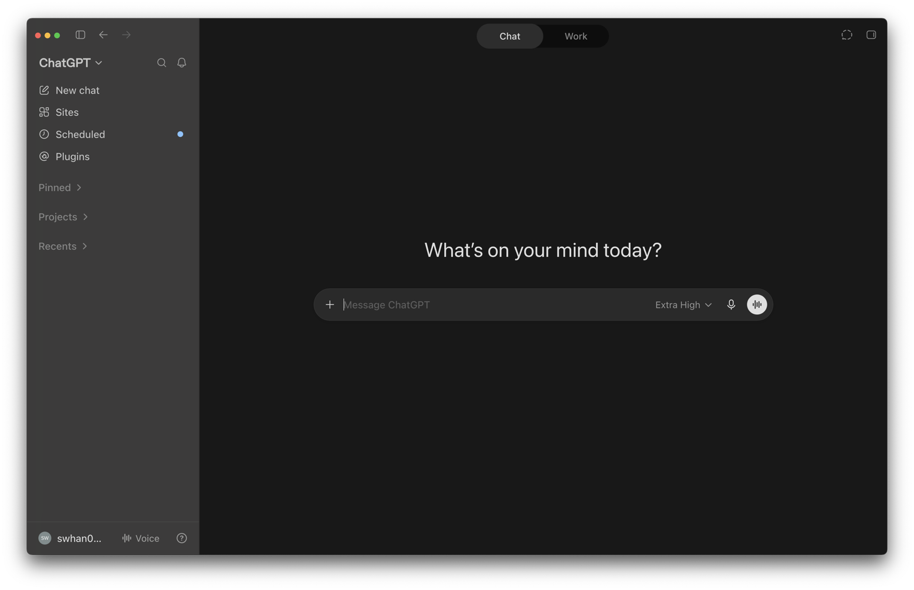

처음 사용자 한눈 요약
오늘 바로 실행할 최소 경로
설치 이후 어디까지 해야 시작이 끝나는지 먼저 고정합니다.
- Quickstart 기준으로 앱/IDE/CLI 중 하나만 먼저 고릅니다.
- Local + 기본 sandbox/approval로 첫 작업 1건을 완료합니다.
결과: 첫 작업 성공 + 되돌릴 수 있는 Git 체크포인트
공식 문서 기반 · 실무 실행 가이드 2026년 8월 23일
CLI부터 데스크톱 앱·IDE·Web·Mobile까지, 한 흐름으로.설치·권한·Git·자동화·프롬프팅을 최신 공식 문서 기준의 실행 순서로 정리했습니다.
Start here
이 페이지는 먼저 두 가지를 보여줍니다. 지금 어떤 모델과 사용 방식을 고르면 되는지, 그리고 처음 사용자와 실무 사용자가 어디서부터 읽으면 좋은지입니다. 오늘 반영한 변경 내용은 하단 Changelog에만 따로 모았습니다.
Built with Codex
OpenAI Developer Showcase에는 Codex로 만든 앱, 게임, 랜딩 페이지, 데이터 시각화 예제가 모여 있습니다. 어떤 결과물이 가능한지 먼저 둘러보고, 바로 실행해볼 수 있는 예시 프롬프트의 감도 함께 잡아보세요.
처음 사용자 한눈 요약
설치 이후 어디까지 해야 시작이 끝나는지 먼저 고정합니다.
결과: 첫 작업 성공 + 되돌릴 수 있는 Git 체크포인트
실무 사용자 한눈 요약
개인 설정이 아니라 프로젝트 규칙으로 행동을 통일합니다.
결과: 팀별 재현 가능한 실행/리뷰/자동화 흐름
Decision first
긴 설명을 읽기 전에, 지금 하려는 작업에 맞는 사용 방식과 모델을 먼저 고를 수 있게 압축했습니다.
| 상황 | 추천 사용 방식 | 모델 기준 | 바로 읽을 곳 |
|---|---|---|---|
| 내 프로젝트에서 작은 수정 | App Local 또는 CLI | gpt-5.6-sol, 일상 작업은 terra | 05-06 설치와 첫 실행 |
| IDE 안에서 계속 코딩 | IDE Extension | 기본 추천 모델 + 프로젝트 컨텍스트 | 08 IDE Extension |
| 팀 규칙과 자동화 도입 | CLI/App + AGENTS.md + MCP | gpt-5.6-sol/terra, 반복 작업은 luna | 12-16 운영 설정 |
| PR 리뷰와 클라우드 작업 | Web/Cloud | 제품이 관리하는 cloud 모델 | 09 Web + 16 자동화 |
Visual guide
처음 보는 사용자라면 이 그림만 먼저 훑어도 됩니다. 어디서 시작할지 고르고, 작은 작업으로 시작하고, sandbox와 Git으로 안전하게 진행한 다음, AGENTS.md와 Docs MCP로 점점 더 똑똑하게 쓰는 흐름을 한 장에 압축했습니다.
Plain language
Analogy
코드를 대신 전부 알아서 만드는 마법 상자라고 보기보다, 파일을 읽고 수정하고 테스트까지 도와주는 꽤 유능한 보조 개발자라고 생각하면 이해가 쉽습니다. 그래서 처음에는 작은 일부터 맡기고, 안전 장치와 프로젝트 규칙을 같이 붙이는 흐름이 가장 자연스럽습니다.
Quickstart와 App 문서를 기준으로, 프로젝트 선택, Local 실행, 첫 요청, Git 체크포인트 순서로 익히는 경로입니다.
AGENTS.md, config.toml, 세션 운영, 로컬 Scheduled task와 Git 검증을 연결해 반복 가능한 팀 작업 방식으로 확장하는 경로입니다.
OpenAI Codex는 코드를 읽고, 고치고, 테스트하고, 결과를 설명하는 코딩 에이전트입니다.
"코드를 쓰는 도구 → 작업을 끝내는 에이전트"
모델, 요금, 설정은 뒤에서 자세히 보고, 여기서는 Codex가 어떤 표면으로 확장되어 왔는지만 빠르게 잡습니다.
| 시기 | 이벤트 |
|---|---|
| 2025.04 | Codex CLI 오픈소스 공개 |
| 2025.05 | 클라우드 샌드박스와 Codex-1 공개 |
| 2025.08.27 | IDE Extension으로 편집기 안 사용 흐름 확장 |
| 2026.02.02 | Codex macOS App 공개 |
| 2026.03.04 | Windows App으로 데스크톱 표면 확장 |
| 2026.04.23 | GPT-5.5가 Codex 추천 모델로 추가되고 Browser use·자동 승인 리뷰 공개 |
| 2026.05.14 | ChatGPT 모바일 앱의 Codex 원격 조율 preview 공개 |
| 2026.05.29 | Windows Computer Use와 Windows 원격 제어 지원 |
| 2026.06.02 | Sites 플러그인 preview로 웹사이트·앱 저장 및 배포 지원 |
| 2026.06.26 | GPT-5.6 Sol/Terra/Luna 제한 preview 공개 |
| 2026.07.09 | GPT-5.6 GA 및 Codex의 ChatGPT 데스크톱 앱 통합 |
| 2026.07.23 | ChatGPT Voice로 Codex 작업을 조율하고 Local project에 여러 폴더를 연결하는 기능 추가 |
| 2026.07.30 | 브라우저 기록·Chrome 탭 컨텍스트, 다중 저장소 리뷰, 생성 이미지 편집 흐름 추가 |
| 2026.07.31 | ChatGPT 로그인 Codex의 GPT-5.4·GPT-5.4 mini 8월 31일 은퇴 안내 |
| 2026.08.11 | Linux 데스크톱 앱 preview와 Claude Code·Cursor 설정 및 최근 작업 가져오기 지원 |
| 2026.08.13 | macOS에서 앱·웹 활동을 메모리와 타임라인으로 연결하는 Computer History 공개 |
| 2026.08.19 | Codex cloud의 GitLab issue·merge request 연동 beta 공개 |
| 2026.08.20 | Apple Messages 플러그인·로컬 thread 공유 스냅샷과 CLI 작업 대시보드 추가 |
출처: Codex changelog · Codex models · Linux app preview · GPT-5.6 preview · GPT-5.6 GA · Work with Codex from anywhere · Wasmer customer story · AI scorecard
터미널 기반(TUI) 로컬 에이전틱 코딩 및 CI/CD 자동화. Linux에서는 CLI와 desktop app preview 중 작업 방식에 맞는 경로를 고릅니다.
데스크톱 앱(macOS, Windows, Linux preview). 멀티에이전트 커맨드 센터, 내장 워크트리. Linux preview는 지원 배포판과 Computer Use 제한을 함께 확인합니다.
VS Code, Cursor, Windsurf, VS Code Insiders, Xcode, JetBrains로 확장된 IDE 에이전트. 로컬 작업과 클라우드 위임을 함께 지원합니다.
ChatGPT 웹/모바일 표면. GitHub 연동, 자동 PR/코드 리뷰, Slack·Linear발 클라우드 작업, 모바일 preview 조율까지 연결합니다.
출처: Quickstart · Codex app · IDE extension · Codex CLI
복잡한 코딩, computer use, 지식 작업, 리서치 워크플로를 위한 최신 프론티어 모델. ChatGPT로 로그인한 Codex에서 최우선 추천 모델입니다.
GPT-5.6 Terra는 일상 작업용 균형 모델입니다. Sol만큼 깊게 쓰지 않아도 되는 반복 개발, 문서 정리, 도구 사용 작업에 적합합니다.
GPT-5.6 Luna는 가장 빠르고 비용 효율적인 추천 모델입니다. 반복적인 로컬 수정, 보조 agent, 대량 처리처럼 latency와 처리량이 중요한 작업에 적합합니다.
텍스트 전용 리서치 프리뷰 모델. 거의 즉각적인 실시간 코딩 반복에 최적화되었으며 ChatGPT Pro 사용자에게 제공됩니다.
gpt-5.6-sol
Medium
Sol
복잡하고 중요한 작업
품질과 깊이가 가장 중요한 기본 선택
Terra
일상적인 실무 작업
정의가 분명한 구현과 일반 업무
Luna
빠르고 반복적인 작업
속도·비용·처리량이 중요한 작업
Max
한 작업에 더 많은 추론 시간을 사용
Ultra
나눌 수 있는 큰 작업을 subagents로 처리
Ultra가 보이지 않으면 Settings > Configuration에서 Ultra in model picker slider를 확인하세요.
ChatGPT 로그인으로 쓰는 Codex에서는 deprecated로 표시된 이전 범용 모델입니다. API에서는 별도 제공 여부를 API models page에서 확인하세요.
⚠️ Codex는 위 모델들과 가장 잘 작동합니다. Chat Completions 또는 Responses API를 지원하는 다른 모델도 사용 가능하지만, Chat Completions API 지원은 향후 제거 예정입니다.
config.toml에서 기본 모델을 설정할 수 있습니다. 지정하지 않으면 추천 모델이 기본값입니다.
model = "gpt-5.6-sol"CLI에서 /model 명령 또는 codex -m 모델명 플래그로 임시 변경 가능.
IDE에서는 입력창 아래 모델 선택기 사용.
codex -m gpt-5.6-solCodex 클라우드 작업의 기본 모델은 현재 변경할 수 없습니다.
출처: Codex models · Codex pricing · OpenAI API Models · GPT-5.6 API guidance
| OS | ChatGPT 데스크톱 앱: macOS/Windows/Linux preview · Codex CLI: macOS/Linux/Windows · Linux preview: Ubuntu 24.04/26.04, Debian 13, Fedora 43/44 x64/ARM64, Computer Use 미지원 |
| Node.js | npm으로 CLI를 설치할 때만 필요 (standalone installer와 데스크톱 앱은 불필요) |
| Git | 강력히 권장 |
| 계정 | ChatGPT Free / Go / Plus / Pro / Business / Edu / Enterprise |
| 플랜 | 가격 | Codex 범위 |
|---|---|---|
| Free | $0 | 빠른 코딩 작업 위주의 Codex 탐색 |
| Go | $8/mo | 가벼운 코딩 작업을 위한 저가형 Codex 사용 |
| Plus | $20/mo | 웹/CLI/IDE/iOS + 최신 모델 + 클라우드 리뷰/Slack + credits 확장 |
| Pro | From $100/mo | Spark 리서치 프리뷰 + priority processing + Pro 5x / Pro 20x 표 + 2026년 5월 31일까지였던 부스트는 dashboard 확인 |
| Business | Pay as you go | 표준 Business seat 또는 Codex-only pay-as-you-go seat + 더 큰 VM + credits + SAML SSO/MFA |
| Enterprise & Edu | 맞춤 / credits | Business 포함 + Codex-only pay-as-you-go 가능 + 우선 처리 + RBAC/감사/거버넌스 |
| API Key | 토큰 사용량 기반 | CLI/IDE/SDK 전용, 클라우드 기능 없음. API-key 사용 시 실제 모델 선택기와 표준 API 가격표를 함께 확인 |
7월 9일 발표 기준, 업데이트된 Mac/Windows desktop app의 Chat·Work·Codex가 Free를 포함한 모든 플랜에 전 세계 제공됩니다.
Worldwide
일반 좌석과 함께 Codex-only pay-as-you-go seat 경로를 확인하세요.
서로 다른 범위이므로 한 숫자로 섞지 말고 함께 대조하세요.
출처: Quickstart · Codex pricing · Codex rate card · Speed · Pay-as-you-go pricing for teams
공식 Quickstart의 Download ChatGPT 버튼에서 macOS 앱을 받습니다.
Download ChatGPT공식 다운로드 또는 Microsoft Store를 사용합니다.
winget install Codex -s msstore
ChatGPT 계정으로 로그인한 뒤 프로젝트를 만들거나 폴더를 엽니다.
API 키 로그인은 일부 workspace·cloud 기능이 제한될 수 있습니다.PowerShell
기본
Sandbox 보호가 필요하면 메시지를 보내기 전에 composer 아래에서 Ask for approval을 선택하세요.
WSL
선택
Settings에서 agent를 WSL로 바꾼 뒤 앱을 재시작하세요.
# Standalone installer (macOS/Linux)
curl -fsSL https://chatgpt.com/codex/install.sh | sh
# Standalone installer (Windows PowerShell)
powershell -ExecutionPolicy ByPass -c "irm https://chatgpt.com/codex/install.ps1 | iex"
# npm
npm install -g @openai/codex
npm update -g @openai/codex
# Homebrew (macOS)
brew install codex
brew upgrade codex
# 설치 확인
codex --version# ChatGPT 계정 로그인 (권장)
codex login
# 또는 API 키 사용
export OPENAI_API_KEY="your-api-key-here"출처: Quickstart · Codex CLI · Windows app · IDE integrations · Authentication

# 인터랙티브 모드
codex
# 프롬프트와 함께
codex "explain this codebase"
# 특정 디렉토리
codex --cd /path/to/project
# 파일 참조
@src/components/Button.tsx 리팩토링해줘
# 쉘 명령어 실행
!npm test출처: Quickstart · Codex CLI · CLI slash commands


좌상단 메뉴에서 ChatGPT 대화와 Codex 개발 작업 공간을 전환합니다.
New task
프로젝트를 고르고 모델과 reasoning effort를 확인한 뒤 시작합니다.
여러 폴더를 추가하고 primary folder를 작업 기준으로 사용합니다.
Git
new chat
AGENTS.md
skills
config.toml
| 권한 profile | 실행 위치 | 설명 |
|---|---|---|
| Local | 내 맥 | 현재 프로젝트 디렉토리에서 직접 작업 |
| Worktree | 내 맥 | Git Worktree로 변경사항 격리. 병렬 작업에 적합 |
| Cloud | 클라우드 | 원격 클라우드 환경에서 실행 |
아래 블록은 단순 소개가 아니라 “언제 쓰고, 어떻게 시작하고, 무엇을 주의해야 하는지”를 기능별로 압축한 실전 챕터입니다. 이번 릴리스에서 중요도가 큰 기능부터 읽으면 됩니다.
Browser use
Browser use는 In-app browser 위에서 Codex가 직접 클릭, 입력, 렌더 상태 검사, 스크린샷, 수정 검증까지 수행하게 하는 기능입니다. 로컬 개발 서버나 파일 기반 프리뷰처럼 로그인 없이 열 수 있는 페이지에서 프론트엔드 버그를 재현하고 고칠 때 가장 실전적입니다.
Example prompt
Use @Browser to open http://localhost:3000/settings.
Reproduce the mobile overflow bug at 390px width, fix only the overflowing controls,
then verify the page again and attach the screenshot result.Computer use
현재 Codex changelog는 GPT-5.6으로 Computer Use가 더 빨라졌다고 설명합니다. 화면을 보고 다음 행동을 정하고, 클릭이나 입력을 실행하고, 바뀐 화면을 다시 확인하는 루프를 더 빠르게 돌리는 맥락으로 읽으면 됩니다.
로컬 개발 서버나 공개 페이지를 렌더 상태 그대로 검토할 때 씁니다. 로그인 없는 URL만 열고, 브라우저 코멘트로 특정 요소를 찍은 뒤 “이 코멘트만 반영해 달라”고 좁게 요청하는 흐름이 가장 안정적입니다.
Codex가 직접 브라우저를 열고 클릭·입력·검증해야 할 때 씁니다. Browser 플러그인과 사이트 허용 설정이 필요하고, 작업은 한 URL·한 상태·한 버그처럼 작게 잘라야 결과를 검토하기 쉽습니다.
배너, 배경, UI 목업 자산, 일러스트를 코드 작업과 같은 thread에서 바로 만들거나 수정할 때 적합합니다. 작은 단위 자산은 내장 기능으로, 대량 생성이나 비용 분리는 API 키 경로로 넘기는 식으로 구분하면 좋습니다.
반복해서 설명하는 선호, 스택, 프로젝트 관례를 Codex가 다시 기억하게 할 때 유용합니다. 다만 팀의 필수 규칙은 여전히 `AGENTS.md`에 두고, memory는 개인 리콜 레이어로 쓰는 것이 공식 권장 흐름입니다.
같은 대화 문맥을 유지한 채 주기적으로 다시 깨워야 하는 작업에 씁니다. 긴 실행 상태 확인, PR 댓글 재점검, Slack/GitHub 폴링처럼 “이전 대화의 맥락”이 중요한 경우에 project automation보다 thread automation이 맞습니다. 현재 문서 기준으로 thread automation은 분 단위 간격이나 일/주간 스케줄에 잘 맞습니다.
skills, app integrations, MCP server를 묶어 배포하는 단위입니다. 반복 프롬프트가 안정화된 뒤 팀에 공유할 때 plugin으로 올리고, 설치 후에는 작업 설명만 하거나 `@plugin`으로 특정 workflow를 직접 호출하는 방식이 좋습니다.
출처: Codex app · App features · In-app browser · App automations · 읽기 전용 thread snapshot · Codex for (almost) everything

VS Code, Cursor, Windsurf, VS Code Insiders에는 Codex 확장을 설치하고, Xcode와 JetBrains IDE에서는 각 IDE의 자체 통합을 사용합니다. ChatGPT 계정 또는 API 키로 로그인할 수 있고 JetBrains는 JetBrains AI 구독도 지원합니다. Windows에서는 네이티브 sandbox를 기본 경로로 두고, Linux-native 도구나 이미 WSL2에 있는 저장소가 중요할 때 WSL2 워크스페이스를 선택하세요.
| 모드 | 파일 접근 | 코드 수정 | 명령 실행 |
|---|---|---|---|
| Chat | △ 수동 컨텍스트만 (@file/열린 파일/선택 영역) | ❌ | ❌ |
| Agent | ✅ | ✅ (승인 필요) | ✅ (승인 필요) |
| Agent (Full Access) | ✅ | ✅ | ✅ |
Chat 모드는 자동으로 파일을 탐색/수정하지 않지만, @file·열린 파일·선택 영역을 컨텍스트로 포함해 질문할 수 있습니다.
출처: IDE extension · IDE features · IDE slash commands · Windows app

Cloud
chatgpt.com/codex에 GitHub 환경을 연결하고 코딩 작업과 리뷰를 실행합니다.
Environment를 만든 뒤 issue·merge request의 @codex와 일회성·자동 review를 사용합니다.
Remote
iOS·Android 또는 지원되는 Mac·Windows 앱에서 awake/online Codex App host를 제어합니다.
SSH
SSH config의 구체 host alias로 프로젝트를 열어 원격 환경에서 실행합니다.
~/.ssh/config
같은 account/workspace와 SSO·MFA·passkey가 필요할 수 있으며, Business/Enterprise는 admin 또는 RBAC 허용이 필요할 수 있습니다.
Codex Web에서 GitHub 연결 후 리뷰 대상 저장소를 선택하고 "Automatic reviews"를 활성화하면 새 PR마다 자동 리뷰됩니다. AGENTS.md 규칙 기반 커스터마이징 가능.
출처: Quickstart · Codex cloud · Remote connections · GitHub integration
| 권한 범위 | 파일 읽기 | 파일 수정 | 명령 실행 | 네트워크 |
|---|---|---|---|---|
| 읽기 전용 | ✅ | ❌ | △ 읽기 명령만 | ❌ |
| 작업공간 권장 시작점 | ✅ | ✅ | ✅ 작업공간 안 | ❌ |
| 사용자 정의 | 설정값 | 설정값 | 설정값 | 명시한 도메인 |
| 전체 접근 | ✅ | ✅ | ✅ | ✅ |
# 현재 권한 선택기
/permissions
# 새 permission profile 방식
default_permissions = ":workspace"
approval_policy = "on-request"
# 예전 sandbox 설정을 쓴다면 위 profile과 섞지 않습니다
codex --sandbox workspace-write --ask-for-approval on-request권한 범위는 로컬 명령이 읽고 쓸 경로와 접속할 네트워크를 묶습니다. 작업공간 범위는 활성 workspace와 임시 폴더 쓰기를 허용하지만 네트워크는 기본적으로 열지 않는 낮은 마찰의 시작점입니다. App의 Ask for approval·Approve for me는 경계를 넘는 요청을 누가 검토할지 정하는 방식이며, sandbox 경계 자체를 없애지 않습니다. 새 permission profile 방식과 예전 `sandbox_mode` 설정은 같은 구성에서 섞지 마세요.
출처: Permission modes · Permission profiles · Sandbox · Config reference
아래 목록은 CLI / IDE / App 공식 문서를 교차 확인해 분리한 명령어입니다. 서로 이름이 비슷해도 동작이 다를 수 있습니다.
/model |
활성 모델 변경 (가능한 경우 reasoning effort 포함) |
/permissions |
승인/권한 정책 변경 |
/agent |
활성 에이전트 스레드 전환 |
/plan |
플랜 모드 전환 (선택적으로 인라인 프롬프트 포함) |
/compact |
대화 요약으로 컨텍스트 토큰 절약 |
/status |
세션 설정/토큰 사용량 확인 |
/review |
워크트리 코드 리뷰 실행 |
/feedback |
진단 로그와 피드백 전송 |
CLI에는 이외에도 /personality, /experimental, /init, /mention, /mcp, /diff, /fork, /resume, /new, /quit 등이 있습니다. /approvals는 별칭으로 동작하지만 팝업 목록에는 표시되지 않습니다.
/auto-context |
자동 컨텍스트 포함 토글 |
/cloud |
클라우드 모드로 전환 |
/cloud-environment |
클라우드 환경 선택 (cloud 모드에서만) |
/local |
로컬 모드로 전환 |
/review |
변경사항 리뷰 모드 시작 |
/status |
스레드 ID/컨텍스트/레이트리밋 확인 |
/feedback |
피드백 다이얼로그 열기 |
/plan-mode |
멀티스텝 계획용 plan mode 토글 |
/mcp |
연결된 MCP 서버 상태 열기 |
/review |
변경사항 리뷰 모드 시작 |
/status |
스레드 ID/컨텍스트/레이트리밋 확인 |
/feedback |
피드백 다이얼로그 열기 |
App 문서 기준으로 명령은 환경/권한에 따라 달라질 수 있으며, 활성화된 skill은 슬래시 목록에 추가될 수 있습니다.
아래 단축키는 CLI(TUI) 기준입니다. App은 OS별 단축키(macOS Cmd, Windows Ctrl)를, IDE는 각 IDE 키맵을 사용합니다.
| Esc ×2 | 입력창이 비었을 때 이전 사용자 메시지 편집 |
| Ctrl+C | 세션 종료 (/exit) |
| Ctrl+G | 프롬프트 에디터 열기 (VISUAL/EDITOR) |
공식 문서: CLI slash commands · IDE slash commands · App commands
Codex에게 프로젝트 맥락과 규칙을 알려주는 핵심 파일. CLI, App, IDE, Web 모두에서 참조합니다.
# AGENTS.md 위치 및 우선순위
AGENTS.override.md → 최우선
./AGENTS.md → 가장 가까운 파일
../AGENTS.md → 상위 디렉토리
~/.codex/AGENTS.md → 전역 개인 설정repo layout, 실행 방법, build/test/lint 명령, 엔지니어링 규칙, 금지사항, 완료 기준과 검증 방법을 적어두면 반복 설명이 크게 줄어듭니다.
개인 기본값은 전역 파일에, 팀 표준은 저장소 루트에, 하위 디렉토리의 로컬 규칙은 더 가까운 AGENTS.md에 두는 구조가 가장 관리하기 쉽습니다.
모호한 규칙을 길게 적기보다 실제로 반복되는 실수만 추가하세요. 문서가 커지면 계획, 리뷰, 아키텍처 규칙은 별도 markdown으로 분리하는 편이 낫습니다.
Codex가 같은 실수를 두 번 반복하면 retrospective를 시키고 AGENTS.md를 업데이트하세요. 일회성 프롬프트보다 지속적인 품질 개선 효과가 큽니다.
# 자동 생성
/init#:schema https://developers.openai.com/codex/config-schema.json
# ~/.codex/config.toml — permission profile 방식
model = "gpt-5.6-sol"
review_model = "gpt-5.6-terra"
model_reasoning_effort = "medium"
plan_mode_reasoning_effort = "medium"
approval_policy = "on-request"
approvals_reviewer = "user"
default_permissions = "project_safe"
web_search = "cached"
personality = "friendly"
# sandbox_mode / sandbox_workspace_write와 함께 쓰지 않습니다
[permissions.project_safe]
description = "현재 프로젝트 안에서만 읽고 쓰는 기본 profile"
extends = ":workspace"
[permissions.project_safe.network]
enabled = false
[features]
fast_mode = true
[tools]
web_search = { context_size = "medium", allowed_domains = ["learn.chatgpt.com", "developers.openai.com", "openai.com"] }
view_image = true
# OpenAI Docs MCP
[mcp_servers.openaiDeveloperDocs]
url = "https://developers.openai.com/mcp"
required = truecodex --profile fast
codex --profile deep개인 기본값은 ~/.codex/config.toml, 저장소별 동작은 .codex/config.toml, 일회성 실험은 CLI override로 분리하는 패턴이 가장 안정적입니다.
model은 기본 두뇌, review_model은 리뷰 전용 두뇌, default_permissions는 파일·네트워크 경계, approval_policy는 언제 멈춰서 묻는지입니다. 예전 sandbox_mode를 쓰는 구성에서는 permission profile과 섞지 않습니다.
모델, review_model, reasoning effort, permission profile, approval policy, web_search, MCP 서버처럼 세션마다 흔들리면 결과 차이가 큰 항목부터 기본값으로 고정하세요.
처음에는 `:workspace` 또는 그보다 좁은 profile로 시작하고, 검증된 workflow에 필요한 경로와 네트워크만 명시적으로 여세요.
품질 문제가 보이면 프롬프트보다 먼저 작업 디렉토리, 쓰기 권한, 기본 모델, 필요한 도구 연결이 맞는지 확인하세요. 많은 실패는 setup mismatch에서 나옵니다.
Business/Enterprise 운영자는 admin-enforced requirements로 approval, sandbox, web_search, MCP allowlist, Browser Use, Computer Use, in-app browser 같은 기능을 사용자 설정보다 우선 적용할 수 있습니다.
출처: Best practices · Config reference · Permissions · Sandbox
MCP는 Codex가 외부 도구와 문서를 읽고, 브라우저를 제어하고, 원격 시스템과 연결할 수 있게 해주는 표준 프로토콜입니다.
Codex는 MCP 없이도 사용할 수 있습니다. 하지만 처음 시작하는 사람이라면 OpenAI Docs MCP 하나만 연결해도 설치, 모델, 명령어, API 문서를 훨씬 정확하게 찾게 됩니다.
# 1) 초보자 추천: OpenAI Docs MCP
codex mcp add openaiDeveloperDocs --url https://developers.openai.com/mcp
# 2) 연결 확인
codex mcp list
codex mcp get openaiDeveloperDocs
# 3) UI 작업이 많다면 Playwright도 추가
codex mcp add playwright -- npx --yes @playwright/mcp@latest이 문장이 없으면 Codex에게 매번 문서 MCP를 명시적으로 사용하라고 요청해야 할 수 있습니다.
Always use the OpenAI developer documentation MCP server for OpenAI API, ChatGPT Apps SDK, Codex, and related product questions unless I explicitly say otherwise.MCP가 실제로 동작하는지 확인하려면, 최신 OpenAI 문서에서 특정 항목을 찾아 요약하게 해보는 것이 가장 빠릅니다.
# 연결 후 테스트 프롬프트
OpenAI Responses API의 tools 요청 스키마를
OpenAI developer docs에서 찾아서
필수 필드만 bullet 5개로 요약해줘.CLI와 IDE Extension은 MCP 설정을 공유합니다. 전역은 ~/.codex/config.toml, 프로젝트별로만 쓰고 싶다면 ./.codex/config.toml을 사용할 수 있습니다. 더 엄격하게 관리하려면 enabled, required, enabled_tools, disabled_tools 같은 옵션도 설정할 수 있습니다.
# 전역 설정: CLI와 IDE Extension이 공유
~/.codex/config.toml
[mcp_servers.openaiDeveloperDocs]
url = "https://developers.openai.com/mcp"
# 프로젝트에만 적용하고 싶다면
./.codex/config.toml필요한 맥락이 저장소 밖에 있거나, 데이터가 자주 바뀌거나, 붙여넣기 대신 도구 호출로 재현 가능한 흐름을 만들고 싶을 때 MCP가 가장 효과적입니다.
Codex는 STDIO 서버와 OAuth를 포함한 Streamable HTTP 서버를 지원합니다. 먼저 설치가 쉬운 서버부터 연결해 반복 루프를 줄이세요.
처음부터 모든 툴을 연결하지 말고, 지금 수동으로 자주 반복하는 작업 하나나 둘만 줄여주는 도구부터 붙이세요. 신뢰가 생긴 뒤 확장하는 편이 낫습니다.
| 서버 | 용도 | 추천 순서 |
|---|---|---|
| OpenAI Docs | OpenAI 공식 개발자 문서를 검색하고 읽기 | 가장 먼저 |
| Playwright | 브라우저 열기, 클릭, UI 상태 확인 | UI 테스트가 필요할 때 |
| GitHub | 원격 PR, 이슈, 저장소 메타데이터 다루기 | Git만으로 부족할 때 |
| Figma | 디자인 파일과 컴포넌트 스펙 확인 | 디자인 협업이 많을 때 |
출처: OpenAI Docs MCP · Best practices · Codex MCP
codex resume --last # 마지막 세션
codex resume # 목록에서 선택
codex resume <ID> # 특정 세션
# 세션 내 명령
/permissions /mcp /status /review /feedback /compact복잡하거나 모호한 작업은 바로 코딩하지 말고 먼저 계획을 세우게 하세요. Plan mode, 인터뷰식 요구사항 정리, 실행 계획 템플릿은 긴 작업의 실패율을 줄여줍니다.
프로젝트 전체를 하나의 스레드로 몰지 말고, 하나의 문제를 푸는 동안만 같은 스레드를 유지하세요. 일이 실제로 갈라질 때만 fork하는 편이 문맥 품질이 좋습니다.
resume으로 이어가고, compact는 milestone 이후에만 쓰세요. 너무 이른 요약은 추론 흔적과 결정 근거를 지워 품질을 떨어뜨릴 수 있습니다.
메인 스레드는 요구사항과 최종 결정을 맡기고, 탐색·테스트·트리아지처럼 읽기 중심의 bounded work만 병렬 agent나 subagent로 분리하세요. 쓰기 충돌이 나는 병렬 편집은 더 조심해야 합니다.
출처: Best practices · CLI commands · Subagents · Long-running work
반복 작업은 GitHub 연동이 없어도 실행할 수 있습니다. ChatGPT 데스크톱 앱의 Scheduled에서 로컬 프로젝트와 실행 환경을 고르면, 앱이 켜져 있고 프로젝트가 디스크에 있는 동안 현재 체크아웃 또는 격리된 worktree에서 작업합니다.
| 경로 | 실행 위치 | 잘 맞는 일 | 주의점 |
|---|---|---|---|
| Local scheduled task | 내 로컬 체크아웃 | 문서 갱신 후 바로 commit/push | 작업 중인 파일과 충돌하지 않게 preflight 필요 |
| Worktree scheduled task | 격리된 Git worktree | 코드 수정, 테스트, 검토 대기 | push 전에 branch 생성과 결과 리뷰 필요 |
| codex exec | 로컬 shell 또는 CI | 스크립트·파이프라인 실행 | 기본은 read-only, 권한을 명시해야 함 |
| GitHub auto-review | GitHub PR | 새 PR 자동 리뷰 | 내 컴퓨터의 미커밋 파일은 볼 수 없음 |
먼저 로컬 프로젝트에서 프롬프트를 수동 실행해 결과를 확인한 뒤 Scheduled task로 옮기세요. 현재 checkout을 바로 배포하는 구조라면 Local을, 사람이 diff를 먼저 볼 구조라면 worktree를 고르는 편이 이해하기 쉽습니다.
Scheduled task에 넣기 전에 일반 로컬 채팅에서 한 번 검증하세요.
이 작업은 현재 로컬 Git 저장소의 공식 문서 기반 정기 업데이트다.
목표
- learn.chatgpt.com/docs를 제품 사용법의 1차 출처로 사용한다.
- 오래된 설명과 링크를 제거하고, 한국어/영어 내용을 같은 의미로 맞춘다.
- 실제 사용자가 따라 할 수 있는 짧은 예시와 검증 방법을 남긴다.
시작 전 확인
- 현재 branch, git status --short, remote를 확인한다.
- 사용자의 tracked 변경이 있거나 main과 origin/main이 갈라졌으면 수정·commit·push하지 말고 이유를 보고한다.
- 기존 untracked 파일은 수정·추가·삭제하지 않는다.
- git pull --ff-only가 실패하면 강제로 해결하지 말고 멈춘다.
작업과 검증
- 공식 문서에서 바뀐 사실만 반영한다. 추측과 홍보성 표현은 넣지 않는다.
- 관련 파일만 수정하고 JavaScript 구문 검사, 번역 검증, git diff --check를 실행한다.
- 로컬 페이지를 열어 한국어/영어와 모바일 레이아웃을 확인한다.
게시
- 모든 검사가 통과하고 diff가 이번 작업 범위에만 있을 때만 관련 tracked 파일을 명시적으로 stage한다.
- git commit -m "docs: refresh guide from official ChatGPT docs" 후 git push origin main을 실행한다.
- git add ., force push, amend, rebase, 사용자 파일 삭제는 금지한다.
- push 또는 원격 확인이 막히면 성공했다고 말하지 말고, 마지막 성공 단계와 필요한 조치만 보고한다.프롬프트는 작업 규칙이고 실제 권한은 별개입니다. commit에는 작업공간 쓰기 권한이, push에는 네트워크·Git 인증이 필요합니다. 먼저 수동 실행으로 정확한 저장소·branch·검증 명령을 확인한 뒤 최소 권한만 허용하세요.
공식 문서도 먼저 일반 채팅에서 프롬프트와 도구를 시험하고 초기 실행 몇 건을 검토하라고 권합니다. 실패 조건과 no-op 조건까지 확인한 뒤 일정을 붙이세요.
검증 실패, 사용자 변경 발견, 원격 branch 충돌이면 commit 전 멈춥니다. commit 뒤 push가 막히면 로컬 commit은 보존하고 push 실패를 그대로 보고해야 복구가 쉽습니다.
로컬 파일을 쓰는 Scheduled task는 컴퓨터가 켜져 있고 데스크톱 앱이 실행 중이며 프로젝트 경로가 유효해야 합니다. 웹 Scheduled task는 연결된 도구는 쓸 수 있어도 내 컴퓨터 폴더를 직접 수정하지 못합니다.
# shell/CI에서는 codex exec를 별도 선택지로 사용
codex exec --sandbox workspace-write "Run the documented checks and report the diff"
# --full-auto는 새 스크립트에서 쓰지 않습니다GitHub의 새 PR을 자동 검토하려면 Code Review 설정을 사용합니다. 로컬 파일 갱신·commit·push가 목적이라면 Local/Worktree Scheduled task가 더 직접적입니다.
아직 사람의 조향이 많이 필요한 흐름이면 먼저 skill로 묶고, 예측 가능해진 뒤 자동화로 옮기세요. 너무 이른 자동화는 품질 편차만 키웁니다.
출처: Scheduled tasks · Local environments · Worktrees · codex exec · Code review · Permissions
이제 프롬프트는 문장 요령보다 작업 규칙을 분명히 정하는 일이 더 중요합니다.
GPT-5.6 기준의 핵심은 세세한 절차를 모두 적는 것보다 목표 결과, 성공 기준, 제약, 사용할 수 있는 근거를 분명히 주고 모델이 적절한 경로를 고르게 하는 데 있습니다.
레퍼런스: Prompting · Best practices · Long-running work · GPT-5.6 Prompt guidance
GPT-5.6 프롬프팅은 모든 단계를 과하게 지정하는 방식보다, 원하는 결과와 성공 기준을 선명하게 두고 필요한 도구·추론·검증 경로를 모델이 고르게 하는 쪽에 가깝습니다.
큰 저장소나 중요한 작업일수록 Goal, Context, Constraints, Success criteria, Stop rules를 짧게 주면 Codex가 불필요한 루프 없이 더 검증 가능한 결과를 냅니다.
작고 명확한 작업은 낮은 설정에서 시작하고, 복잡한 변경과 디버깅은 medium/high로 올립니다. 품질이 부족할 때는 reasoning을 올리기 전에 완료 기준, 검증, 근거 규칙을 먼저 점검하세요.
절차를 길게 잠그기보다 목표 결과, 필수 출력 필드, 성공 기준, 부족한 근거가 있을 때의 행동을 먼저 고정하세요.
되돌릴 수 있고 저위험인 다음 단계는 자동으로 진행하고, 외부 부작용이나 파괴적 변경만 별도 승인을 받게 해야 합니다.
정확성이 중요하면 도구를 한 번 쓰고 멈추지 않게 하고, 선행 조회, 빈 결과 복구, 검색 예산, 완료 판정까지 묶어줘야 합니다.
품질이 부족할 때 무조건 reasoning effort부터 올리기보다, 먼저 요청 방식과 검증 규칙을 보강하는 것이 더 효율적입니다.
Goal, success criteria, constraints, output, stop rules를 짧게 고정하고, incomplete execution, format drift, 약한 citation처럼 관측한 실패를 고칠 때만 추가 블록을 붙이세요.
가장 큰 개선 효과는 목표 결과, 성공 기준, 자율 진행 기준, 충돌하는 지시의 우선순위를 짧고 명확한 규칙으로 적는 데서 나옵니다.
무엇을 달성해야 하는지, 성공은 무엇으로 판단하는지, 필수 출력 필드는 무엇인지 먼저 고정하세요.
저위험이고 되돌릴 수 있는 다음 단계는 진행하고, 파괴적 변경이나 외부 부작용만 승인을 받게 하세요.
새 사용자 지시는 예전 스타일보다 우선하되, 안전·정직·권한 규칙은 예외로 두는 식으로 우선순위를 분명히 합니다.
중간에 지시가 바뀌면 이번 응답에만 적용되는지, 남은 세션 전체에 적용되는지 범위를 적어 주세요.
<assistant_rules>
- Return exactly the requested sections, in the requested order.
- Keep progress updates short and outcome-focused.
- If the next step is reversible and low risk, continue without asking.
- Ask first for destructive changes, production writes, purchases, sending, or deletions.
- If a newer user instruction conflicts with an older one, follow the newer one.
- Preserve earlier instructions that still do not conflict.
</assistant_rules>모든 블록을 항상 넣지 말고, 실제로 실패를 줄여주는 조합만 남기는 편이 좋습니다.
긴 작업에서 흔한 실패는 “대충 끝난 것처럼 보이지만 실제로는 덜 끝난 상태”입니다. 도구를 어디까지 계속 쓸지, 빈 결과를 어떻게 복구할지, 결과를 어떻게 검증할지를 같이 정해야 합니다.
정확도와 완결성에 도움이 되면 도구를 계속 쓰고, 한 번의 조회 결과만으로 너무 빨리 멈추지 않게 합니다.
최종 행동이 명확해 보여도 선행 조회나 prerequisite step이 필요한지 먼저 확인해야 합니다.
독립적인 조회만 병렬화하고, 앞 단계 결과가 다음 행동을 바꾸는 경우는 순차 실행으로 남겨야 합니다.
배치, 목록, 페이지네이션 작업이라면 예상 범위와 처리 상태를 내부적으로 추적하도록 요구하세요.
끝나기 전에 요구사항 커버리지, grounding, 포맷, 안전성, 되돌리기 어려운 부작용 여부를 한 번 더 확인하게 하세요.
<agent_execution_loop>
- Use tools whenever they materially improve correctness or completeness.
- Do not skip prerequisite lookups just because the final action seems obvious.
- If a lookup is empty or suspiciously narrow, retry with one broader or alternate strategy.
- Treat the task as incomplete until every requested item is covered or explicitly marked blocked.
- Before finalizing, verify requirements coverage, grounding, and output format.
</agent_execution_loop>공식 Follow goals 문서와 2026년 5월 21일 Enterprise/Edu 릴리스 노트 기준으로 Goal mode는 Codex app, IDE extension, CLI에서 일반 제공됩니다. 한 번의 프롬프트보다 길지만 무한 backlog는 아닌 작업에 쓰고, 시작할 때 목표·완료 조건·검증 명령·중간 체크포인트·중단/승인 조건을 함께 적으세요.
공식 가이드의 핵심은 모든 작업에 같은 프롬프트를 쓰지 말고, 작업 유형별로 요청 규칙을 다르게 잡으라는 점입니다.
검색과 합성이 필요한 작업은 sub-question 분해, retrieval budget, 재검색 조건, citation gating을 따로 줘야 합니다.
JSON, SQL, XML처럼 파싱 민감한 출력은 “그 형식만 반환”과 마감 전 self-check를 함께 요구하세요.
셸 도구, 편집 도구, 사용자 업데이트 빈도, 검증 강도를 명확히 두면 코딩 에이전트의 일관성이 올라갑니다.
성격(personality)은 세션 기본값으로, 채널/톤/길이 제한은 응답 단위 제어로 분리하는 편이 좋습니다.
<research_mode>
- Define the core question and success criteria before searching.
- Break the question into 3-5 sub-questions.
- Use the smallest retrieval budget that can answer with evidence.
- Search again only when a required fact, date, owner, or source is missing.
- Cite only sources retrieved in this run.
- If results are thin, retry once with a broader query before concluding.
- Stop when more search is unlikely to change the answer.
</research_mode><coding_agent_rules>
- Start from the target outcome, success criteria, constraints, and stop rules.
- Persist until the requested change is implemented and verified.
- Use tools when they improve correctness, not just convenience.
- Give the user short updates only at phase changes.
- Run the lightest relevant test, build, or lint step before stopping.
- If validation cannot run, explain why and name the next best check.
- Report what changed, what was verified, and what remains risky.
</coding_agent_rules>reasoning effort는 첫 번째 해결책이 아니라 마지막 미세 조정 노브에 가깝습니다. 요청 방식과 검증 흐름을 먼저 손보는 편이 더 값집니다.
| reasoning_effort | 언제 여기서 시작할까 |
|---|---|
none |
짧은 변환, 실행 중심 작업, 빠른 tool routing, latency가 중요한 플로우 |
low |
약간의 해석은 필요하지만 속도도 중요한 작업 |
medium |
다문서 합성, 충돌 해소, 정책/전략성 글쓰기, 복잡한 코딩 계획 |
high / xhigh |
장기 에이전트 작업에서 eval로 분명한 이득이 있을 때만 선택 |
phase는 preamble 같은 중간 업데이트와 final answer를 구분합니다. assistant item을 수동 재전송한다면 기존 phase 값을 그대로 보존해야 합니다.품질이 너무 문자 그대로이거나 중간에 멈춘다면 reasoning을 올리기 전에 완료 기준, 도구 사용 기준, 검증, 인용 규칙을 먼저 붙여 보세요.
아래 템플릿은 Codex 101에서 바로 가져다 쓸 수 있는 최소 골격입니다. outcome, success criteria, constraints, output, stop rules를 먼저 두고, 필요 없는 블록은 빼세요.
Update this codebase to [target outcome].
Success criteria:
- [observable behavior, test result, or deliverable]
Constraints:
- Work only in the files that are relevant.
- Keep the final response concise.
- If the request is clear and low risk, proceed without asking.
Execution rules:
- Do prerequisite lookups before editing.
- Persist until the change is implemented and verified.
- Run the lightest relevant verification step before finalizing.
- If validation cannot run, explain why and name the next best check.
- If blocked, say exactly what is missing.Answer this question with evidence: [question]
Success criteria:
- The answer distinguishes supported facts from inference.
- Factual claims cite sources retrieved in this run.
Research rules:
- Break it into 3-5 sub-questions.
- Search each one with the smallest useful retrieval budget.
- Search again only if a required fact, date, owner, or source is missing.
- Cite only sources retrieved in this run.
- Distinguish supported facts from inference.
- Stop only when more search is unlikely to change the conclusion.최신 best practices와 customization 문서를 같이 보면 장기적으로 잘 쓰는 사용자는 반복 작업을 skill로 만들고, 팀에 공유할 때는 plugin으로 묶고, 외부 시스템 연결은 MCP로 붙이고, 장기 작업은 bounded delegation으로 나눕니다.
# 모델 선택
/model gpt-5.6-sol # 복잡하고 중요한 작업
/model gpt-5.6-terra # 일상 작업
/model gpt-5.6-luna # 빠른 반복 작업 / subagent
# 플러그인 디렉터리 (CLI)
/plugins
# 멀티 디렉토리
codex --add-dir /path/to/libs
# 웹 검색(인터랙티브에서 --search 전역 옵션 사용)
codex --search "optimize with Next.js 15"
# 컨텍스트 압축
/compact같은 프롬프트나 같은 수정 지시를 반복한다면 먼저 skill로 정리하세요. 그 workflow를 팀이나 여러 프로젝트에 배포하고 싶어지면 plugin으로 묶어 skill, 선택적 app 연동, MCP 설정을 한 번에 설치 가능하게 만드는 방식이 현재 공식 구조와 맞습니다.
메인 에이전트는 핵심 의사결정에 남기고, 탐색, 테스트, 로그 트리아지, 릴리스 초안 같은 bounded work부터 병렬화하면 결과를 통합하기 쉽습니다.
로그 트리아지, PR 체크리스트 리뷰, 마이그레이션 계획, incident summary, 표준 디버깅 플로우처럼 skill 하나로 끝나지 않고 app 연동이나 MCP가 함께 필요한 workflow는 plugin으로 묶기 좋은 후보입니다.
반복 작업이 아직 많이 흔들리면 automation보다 skill이 먼저입니다. 수동으로 안정화된 뒤 plugin으로 패키징하고, 그 다음 자동화를 얹는 순서가 가장 안전합니다.
출처: Codex Best practices · Customization · Skills · Plugins · Multi-agents · Self-improving tax agents with Codex · Wasmer + Codex
모두 같은 Codex App Server 프로토콜을 사용하지만 인터페이스가 다릅니다. CLI는 터미널, App은 macOS/Windows/Linux preview 데스크톱 멀티에이전트, IDE는 VS Code 통합, Web은 브라우저에서 GitHub 연동입니다.
네. 현재 공식 문서는 모든 ChatGPT 플랜에 Codex가 포함된다고 설명합니다. 다만 정확한 사용 한도와 rate limit은 모델, 작업 크기, 로컬/클라우드 실행 여부에 따라 달라지므로 실제 사용 전에는 공식 가격표와 usage dashboard를 함께 확인하는 편이 좋습니다.
OS 수준 샌드박싱 + 네트워크 차단이 적용됩니다. Git으로 관리하면 언제든 되돌릴 수 있습니다.
2026년 2월 12일 공개된 텍스트 중심 초고속 코딩 모델입니다. ChatGPT Pro용 research preview가 기본 경로이고, Pricing 문서도 API launch 시점에는 제공되지 않는다고 설명합니다. 발표문은 소수 디자인 파트너 대상 제한적 API 테스트와 별도 사용 한도를 함께 언급합니다.
Codex CLI는 오픈소스(Rust)이며, 타사 모델 프로바이더(Ollama 등)를 연결할 수 있지만, 품질은 OpenAI 모델보다 떨어집니다.
OpenAI Codex, Developer Experience, 데이터/보안/제품 담당자들이 공개적으로 공유한 실전 사용법을 사람별 원글 링크와 함께 정리했습니다. 제품의 사용 가능 여부와 설정 절차는 아래 공식 문서 링크를 함께 확인하세요.
Dominik은 Codex CLI의 /goal을 쓸 때 목표만 던지지 말고 token budget을 함께 정하라고 말합니다. 오래 가는 작업일수록 완료 조건, 예산, 멈출 기준을 같이 적어야 Codex가 끝없이 넓어지지 않습니다.
VB + Dominik스크린샷이나 appshot을 붙일 때는 “봐줘”보다 “이 화면을 조사해”, “이 문제를 고쳐 PR 열어”, “이 prompt set으로 eval 돌려”, “heartbeat로 계속 확인해”처럼 다음 행동을 분명히 말하세요.
Dominik Kundel + Brent Schooley/goal은 “계속 해줘”가 아니라 하나의 durable objective와 멈출 기준을 주는 기능입니다. 목표, 건드리지 말 것, 증명 명령, 화면 기준, 중간 checkpoint를 같이 적어야 오래 가는 작업이 믿을 만해집니다.
Ryan Lopopolo + Nicole ChaRyan은 skill을 결정론적 프로그램처럼 쓰기보다 Codex가 올바른 작업 이론을 잡게 하는 runbook으로 보라고 말합니다. 무엇을 할지, 왜 중요한지, 어디에서 근거를 확인할지 적고 세부 실행은 현재 코드와 검증에 맞춰 조정하게 하세요.
VB + Build Apps pluginsmacOS SwiftUI 앱이면 Build macOS Apps, iOS 앱이면 Build iOS Apps처럼 플랫폼을 아는 plugin을 먼저 붙이세요. 빌드, simulator, 로그, UI 확인의 표준 루프를 Codex가 다시 발명하지 않게 해줍니다.
Jason Wang + Data Analytics pluginJason은 OpenAI 내부 팀이 Data Analytics plugin으로 먼저 “무엇을 측정할지” 정의한다고 설명합니다. 분석을 맡기기 전에 north star, success metrics, guardrails, data gaps를 Codex가 정리하게 하세요.
VB + Auto-reviewVB는 데이터와 인프라를 다룰 때 “Approve for me”를 켜서 Codex가 실행하려는 명령을 별도 reviewer agent가 먼저 보게 하라고 권합니다. 공식 문서에서는 이 흐름을 Auto-review로 설명하므로, 자동 승인처럼 쓰지 말고 sandbox 경계와 승인 범위를 함께 확인하세요.
VB + GPT-5.6 SolVB의 최신 모델 운용 팁은 “필요한 만큼만 reasoning을 올리기”입니다. 공식 모델 문서도 Power 기본값을 Sol medium으로 두고, 더 깊은 분석은 Smarter나 Advanced에서 조정하라고 안내합니다.
Gabriel Chua + Build WeekGabriel의 Build Week 가이드는 Codex를 바로 코딩 버튼처럼 누르기보다, 먼저 아이디어를 말로 풀고 예시·plugin·기존 프로젝트를 붙여 작은 실험으로 좁히라고 안내합니다. 처음 쓰는 사람에게는 설치보다 “무엇을 만들고 어떻게 확인할지”가 먼저입니다.
Romain Huet + GPT-5.6Romain은 GPT-5.6 Sol/Terra/Luna가 ChatGPT, Codex, API에 걸쳐 비용·속도·완성도 균형을 바꾼다고 설명했습니다. 모델 matrix는 고정 답이 아니라 재검토 습관입니다. 공식 모델 페이지를 먼저 보고, 작업 난이도와 비용을 함께 맞추세요.
VB Srivastav + config schemaVB는 Codex가 잘못된 가정으로 오래 달리지 않도록 필요할 때 바로 결정을 묻게 하라고 권합니다. `default_mode_request_user_input`은 공식 config schema에 feature key로 보이지만, 운영 문장은 practitioner tip으로 읽고 팀 설정에 넣기 전에는 현재 앱 동작을 확인하세요.
VB Srivastav + Visualize skillVB는 설명을 요청할 때 Codex가 Visualize skill을 쓰도록 `AGENTS.md`에 적어두는 흐름을 제안했습니다. 복잡한 일정, 데이터, 시스템 구조처럼 말로만 보면 흐려지는 주제는 먼저 시각화하고, 원자료와 해석을 분리해 검토하세요.
Dominik Kundel + Chat contextDominik은 이전 응답의 필요한 부분을 highlight하고 Add to chat으로 다시 붙이는 습관을 소개했습니다. 긴 대화에서 전체를 반복하지 말고, 결정·요구사항·검증 결과처럼 다음 작업에 필요한 조각만 새 요청에 올리면 좋습니다.
Greg Brockman + Codex SecurityGreg는 Codex가 GitHub PR에 보안 리뷰 finding을 남길 수 있다고 소개했습니다. 자동 리뷰는 GitHub integration 설정에서 켜고, 더 깊은 보안 workflow는 Security plugin 문서의 scan, finding, fix, verify 경계를 따라야 합니다.
VB Srivastav + Dominik KundelVB와 Dominik의 최신 글은 Linux에서도 ChatGPT desktop app으로 Codex를 쓸 수 있음을 보여줍니다. 공식 Linux 문서 기준으로 Ubuntu 24.04/26.04, Debian 13, Fedora 43/44의 x64/ARM64 preview이며, Computer Use는 아직 Linux preview에서 지원되지 않습니다.
Alexander EmbiricosAlexander는 Codex Chrome extension을 여러 agent와 subagent가 여러 tab에서 배경 작업을 더 빠르게 진행하게 하는 확장으로 설명합니다. 브라우저 자동화는 권한과 세션 경계를 분명히 둔 상태에서 써야 합니다.
Rohan Varma + Brent SchooleyRohan과 Brent가 말한 Sites, role-based plugins, annotations 흐름은 Codex를 “코딩 도구”에서 팀별 결과물 제작 surface로 넓히는 방향입니다. 배포 가능 범위는 공식 Sites와 Plugins 문서를 우선하세요.
VB + Codex MobileVB는 Codex Mobile을 Mac, Windows machine, devbox에서 도는 작업의 control plane으로 설명합니다. 휴대폰은 승인, diff, test, terminal output을 이어보는 화면이고 파일과 credential은 host에 남습니다.
Alexander Embiricos + Cyber teamAlexander가 Michael Aiello와 Clint Gibler의 Cyber 합류를 소개한 맥락은 강력한 agent를 defender가 안전하게 배포하는 방향입니다. 일반 Codex 설정 팁이 아니라 보안 운영과 human review 맥락으로 읽어야 합니다.
Katia + OpenAI DevelopersCodex, API, Agents SDK, ChatGPT Apps처럼 바뀌는 주제는 소셜 글이나 기억만으로 단정하지 말고 OpenAI developer docs agent나 Docs MCP로 공식 문서를 먼저 찾으세요. Codex 제품 기능과 API 플랫폼 기능도 섞지 마세요.
Johannes Landgraf + Ona teamOna 인수 발표는 Codex가 장시간 enterprise 작업을 고객 통제 cloud 환경에서 이어가는 방향을 보여줍니다. 다만 인수는 closing 조건이 남아 있으므로, 지금 켜는 설정처럼 쓰지 말고 공식 발표와 현재 사용 가능한 기능을 분리해서 설명하세요.
 Codex Pet 실전 녹화본
왜 Codex Pet이 나왔는지 보기
Codex Pet은 단순한 캐릭터 예제가 아니라, `hatch-pet` 같은 skill을 설치해 base art 생성, 8x9 spritesheet/atlas 조립, QA contact sheet, preview, `pet.json` 패키징까지 반복 가능한 절차로 실행하는 사례입니다. 이 영상은 설명을 덧붙인 튜토리얼이 아니라 실제 제작 과정을 풀로 기록한 녹화본입니다.
YouTube에서 풀 녹화본 보기
Codex Pet 실전 녹화본
왜 Codex Pet이 나왔는지 보기
Codex Pet은 단순한 캐릭터 예제가 아니라, `hatch-pet` 같은 skill을 설치해 base art 생성, 8x9 spritesheet/atlas 조립, QA contact sheet, preview, `pet.json` 패키징까지 반복 가능한 절차로 실행하는 사례입니다. 이 영상은 설명을 덧붙인 튜토리얼이 아니라 실제 제작 과정을 풀로 기록한 녹화본입니다.
YouTube에서 풀 녹화본 보기
원글 및 근거
Changelog
업데이트 기준일 2026년 8월 23일